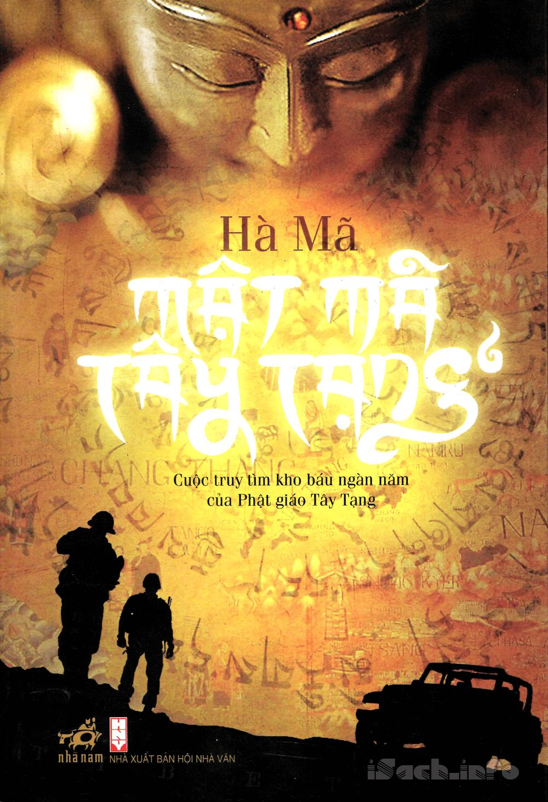

« Back
Mật Mã Tây Tạng
By Hà Mã

Giới Thiệu Tác Phẩm.
Tập I:Lời Mở Đầu.
Chương 1
Chương 2
Chương 3
Chương 4
Chương 5
Chương 6
Chương 7
Tập II:Lời Mở Đầu.
Chương 8
Chương 9: Nguy Hiểm Trong Rừng.
Chương 10
Chương 11: Rừng Than Thở: Mồ Chôn Của Các Nhà Thám Hiểm.
Chương 12: Hồng Hoang: Bàn Tay Thượng.
Chương 13: Chúng Ta Bị Bộc Lạc Ăn Thịt Người Bắt Rồi.
Chương 14: Thành Phố Thần Thánh Của Người MAYA.
Tập III:Chương 1: Ký Hiệu Mật Mã.
Chương 2: Âm Trận.
Chương 3: Mê Cung MAYA.
Chương 4: Ác Ma Bay Lượn.
Chương 5: Bẫy Sập.
Chương 6: Lửa Địa Ngục.
Chương 7: Nước Địa Ngục.
Chương 8: Địa Ngục Của Nước Và Lửa.
Chương 9: Huyết Trì.
Chương 10: Trở Lại Tây Tạng.
Chương 11
Chương 12: Bí Mật Về Nhà Thám Hiểm Stanley.
Chương 13: Mật Tu 2.
Chương 14: Tây Tạng:Mặc Thoát: Vùng Đất Bí Mật Cuối Cùng.
Chương 15: Cánh Cửa Sinh Mệnh.
Chương 16: Cánh Cửa Địa Ngục.
Tập IV:Chương 1: Trưởng Lão Thôn Công Bố.
Chương 2: Sói Tuyết Cao Nguyên.
Chương 3: Mối Ưu Tư Của Lạt Ma Á La.
Chương 4: Gặp Lại Trận Đồ Đá Khổng Lồ.
Chương 5: Đảo Huyền Không Tự.
Chương 6: Thánh Luyện Đường.
Chương 7
Chương 8
Chương 9
Chương 10
Chương 11: Phật Điện.
Chương 12
Chương 13: Trái Tim Đang Đập.
Chương 14: Cơ Quan Đơn Giản.
Chương 15: Luyện Ngục Của Bậc Dũng Sĩ.
Chương 16: Huyết Trì Siêu Cấp.
Chương 17: Trùng Khốn.
Chương 18: Cái Chết Của Đa Cát.
Chương 19: Đối Đầu Quyết Chiến.
Chương 20: Gặp Lại.
Chương 21: Huyết Trì Khổng Lồ.
Chương 22: Huyết Mạch Nối Liền.
Chương 23: Một Đám Thương Binh.
Chương 24: Thảo Luận.
Chương 25: Sắp Xếp Của Ben.
Chương 26: Cổ Cách Kim Thư.
Chương 27: Sự Ra Đời Của Quan Đạo Ánh Sáng.
Chương 28: Trận Chiến Nghìn Năm.
Chương 29: Tam Đại Mật Sư Truyền.
Chương 30: Lời Nguyền Thần Bí.
Chương 31: Đáp Án Của Trí Giải.
Chương 32: Tổng Kết.
Tập V:Giới Thiệu.
Chương 1: Tâm Sự Của Trác Mộc Cường Ba.
Chương 2: Núi Tuyết.
Chương 3: Kẻ Tôi Tớ Của Núi Tuyết.
Chương 4: Cương Lạp Mai Đóa.
Chương 5: Tín Ngưỡng Của Người Qua Ba.
Chương 6: Suy Đoán Về Tử Kỳ Lân.
Chương 7: Sói.
Chương 8: Thú Chiến.
Chương 9: Những Con Sói Chưa Thấy Bao Giờ.
Chương 10: Mưu Kế Của Bầy Sói.
Chương 11: Đụng Độ.
Chương 12: Lang Tiêu.
Chương 13: Thân Thế Của Cương Lạp.
Chương 14: Hậu Duệ Bạch Ngân.
Chương 15: Bình Minh Núi Tuyết.
Chương 16: Cánh Cửa Địa Ngục.
Chương 17: Khe Băng Nứt.
Chương 18: Thủy Tinh Cung.
Chương 19: Mê Cung Băng.
Chương 20: Thủy Tinh Cung.
Chương 21: Cực Nam Miếu.
Chương 22
Chương 23: Dốc Băng Dựng Đứng.
Chương 24: Cái Chết Của Cương Nhật Phổ Bạc.
Chương 25
Chương 26: Tử Vong Tây Phong Đới.
Chương 27: Hồi Ức Của Ba Tang.
Chương 28: Tuyết Lở.
Chương 29: Trở Lại Tây Phong Đới.
Chương 30: Huynh Đệ.
Chương 31: Tình Đêm Lạnh.
Chương 32
Chương 33: Rút Củi Đáy Nồi.
Chương 34: Sụp Đổ.
Chương 35: Sụp Đổ Hoàn Toàn.
Chương 36: Quán Rượu Hẹn Hò.
Chương 37: Niết Bàn Đẫm Máu.
Chương 38: Làm Lại Từ Đầu.
Tập VI:Giới Thiệu.
Chương 1: Bí Mật Của Mật Tu Giả.
Chương 2: Đội Trưởng Trác Mộc Cường Ba.
Chương 3: Hô Hấp.
Chương 4: Nghi Vấn Trong Kim Thư.
Chương 5: Tin Mật Của Hitler.
Chương 6: Vị Khách Bất Ngờ.
Chương 7: Tòa Thành Khắc Đá.
Chương 8
Chương 9: Sự Kiên Trì Của Vương Hựu.
Chương 10: Đêm Moscow.
Chương 11
Chương 12: Cạm Bẫy.
Chương 13: Tử Đấu.
Chương 14: Gặp Lại Sean.
Chương 15: Họa Phúc Khó Lường.
Chương 16: Đắp Đê Và Dẫn Dòng.
Chương 17: Pháp Sư Tháp Tây.
Chương 18: Nguồn Gốc Đối Thủ.
Chương 19: Suy Đoán Về Merkin.
Chương 20: Gia Tộc Bạc Ba La.
Chương 21: Thành Viên Mới (1).
Chương 22: Thành Viên Mới (2).
Chương 23: Đảng Quốc Xã Lần Đầu Tiến Vào Tây Tạng.
Chương 24: Suy Đoán Về 13 Hiệp Sĩ Bàn Tròn.
Chương 25: Merkin Và Stanley.
Chương 26: Đảng Quốc Xã Lần Thứ Hai Tiến Vào Tây Tạng.
Chương 27: Ba Nghi Vấn Lớn.
Chương 28: Hồi Ức Của Merkin.
Chương 29: Tập Hợp Lại.
Chương 30: Hương Ba La Mật Quang Bảo Giám.
Chương 31: Bí Mật Đằng Sau Hình Ảnh Phản Chiếu (1).
Chương 32: Bí Mật Đằng Sau Hình Ảnh Phản Chiếu (2).
Chương 33: Tiền Thân Của Shangri: La.
Chương 34: Trở Lại Thôn Công Bố.
Chương 35: Lối Vào.
Chương 36: Lần Đầu Thăm Dò.
Chương 37: Thăm Dò U Minh Hà (1).
Chương 38: Thăm Dò U Minh Hà (2).
Chương 39: Thuyền Hình Rắn.
Chương 40: Chiến Ngao Thời Nhà Nguyễn.
Tập VII:Chương 1: Đại Thiên Luân Kinh: Pháp Điển Tối Cao Của Mật Tông Tây Tạng.
Chương 2: Tiến Về Shangri:La.
Chương 3: Tây Tạng: Đại Dương Cổ Tethys 1.
Chương 4: Gặp Lại Mười Ba Kỵ Sĩ Bàn Tròn.
Chương 5: Tiến Vào Shangri:La Trở Lại Đại Cổ Sinh.
Chương 6: Băng Rừng Nguyên Sinh Shangri:La.
Chương 7: Thôn Làng Người Qua Ba Bị Lãng Quên.
Chương 8: Lạc Lối Ở Shangri:La.
Tập VIII:Chương 1: Bí Ẩn Người Tuyết Himalaya.
Chương 2: Người Tuyết Himalaya Giờ Ở Đâu?.
Chương 3: Những Người Trúng Cổ Độc.
Chương 4: Di Tích Của Dân Tộc Mục.
Chương 5: Thành Tước Mẫu.
Chương 6: Vương Quốc Yaca Thần Bbí.
Chương 7: Mật Tu Giả Tìm Đường Trở Về.
Chương 8: Cái Chết Của Đội Trưởng Hồ Dương.
Tập IX:Chương 1: Bí Ẩn Linh Hồn Chuyển Thể:Tẩy Huyết.
Chương 2
Chương 3
Chương 4
Chương 5
Chương 6
Chương 7
Chương 8
Chương 9
Chương 10
Chương 11
Chương 12
Chương 13
Chương 14
Chương 15
Chương 16
Chương 17
Chương 18
Chương 19
Chương 20
Chương 21
Chương 22
Chương 23
Chương 24
Chương 25
Chương 26
Chương 27
Chương 28
Chương 29
Chương 30
Chương 31
Chương 32
Chương 33
Chương 34
Chương 35
Chương 36
Chương 37
Chương 38
Chương 39
Chương 40
Tập X:Chương 1: Vườn Địa Đàng Bị Bỏ Quên.
Chương 2
Chương 3
Chương 4
Chương 5
Chương 6
Chương 7
Chương 7
Chương 9
Chương 10
Chương 11
Chương 12
Chương 13
Chương 14
Chương 15
Chương 16
Chương 17
Chương 18
Chương 19
Chương 20
Chương 21
Chương 22
Chương 23
Chương 24
Chương 25
Chương 26
Chương 27
Chương 28
Chương 29
Chương 30
Chương 31
Chương 32
Chương 33
Chương 34
Chương 35
Chương 36
Chương 37
Chương 38
Chương 39
Chương 40
Chương 41
Chương 42
Chương 43
Chương 44
Chương 45
Chương 46
Chương 47
Chương 48
Chương 49
Chương 50
Chương 51
Chương 52
Chương 53
Chương 54
Chương 55
Chương 56
Chương 57
Vĩ Thanh.